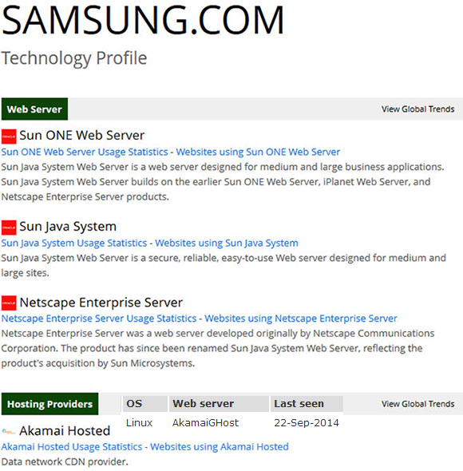

Technique Details
- Web server and OS
- The information of web server and OS of the website is generated from builtwith.com
and www.netcraft.com. Since I could not have information of www.samsung.com/nz from NETCRAFT I found the information of www.samsung.com domain instead. The results show that the webserver is running on Linux.

- Technologies used
- The technologies are used on the website is mainly jQuery as the following photos. HTML and CSS are basic technologies used on the website. Viewing the page source of the website (photo 2) simply tells what frame work is used.
Photo 1. Generated from biltwith.com
Photo 2. view page source